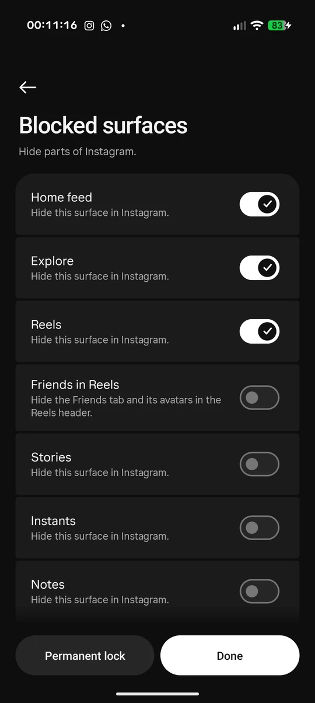
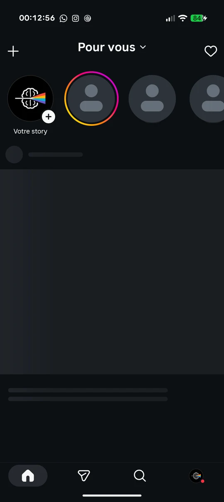

Instagram sans fil d'actualité : garder seulement les DM et les stories
Pourquoi utiliser Instagram sans fil d'actualité
Pour beaucoup, Instagram est d'abord une messagerie à laquelle on a greffé un fil : les amis répondent aux stories, les groupes discutent en DM, les soirées s'organisent là. Le fil, avec ses publications suggérées et ses Reels mélangés, transforme une réponse de deux minutes en quarante minutes de scroll. Le retirer permet de garder ce pour quoi on ouvre vraiment l'application.
Deux façons de le configurer dans Feurstagram
1. Bloquer complètement le fil d'actualité
C'est le réglage par défaut. La requête native du fil est envoyée, puis son contenu est filtré localement : aucune publication ne s’affiche et il n’y a rien à faire défiler. Les stories restent en haut, et la barre du bas mène aux messages, à la recherche et à votre profil. Avec les blocages Reels et Explorer, l'application devient Instagram sans fil et sans Reels.
2. Garder un fil limité aux abonnements
Si vous voulez encore voir ce que publient vos amis, laissez le fil débloqué et activez Following feed only (fil limité aux abonnements). Le fil n'affiche alors que les comptes suivis, dans l'ordre chronologique, sans publications recommandées. Contrairement à la vue « Abonnements » d'Instagram, ce réglage ne se réinitialise pas au redémarrage.
La configuration en 4 étapes
- Téléchargez le dernier APK Feurstagram (ou l'APK Clone pour garder aussi l'Instagram officiel).
- Installez-le et connectez-vous à Instagram comme d'habitude.
- Touchez l'icône Feurstagram en haut de votre profil, à côté du menu pour ouvrir les réglages de Feurstagram.
- Laissez Home Feed bloqué, ou débloquez-le et activez Following feed only. Choisissez Direct messages comme écran d'ouverture pour arriver directement sur vos messages, puis touchez Done.
Les réglages de l'application sont en anglais ; les noms en gras correspondent à ce que vous verrez à l'écran.
téléchargements sur GitHub


Ce que vous pouvez masquer d'autre
- Reels : onglet et fil. Les Reels envoyés en DM s'ouvrent toujours.
- Explorer et comptes suggérés.
- Stories, si vous ne voulez que les messages.
- Notes au-dessus de la messagerie et le bouton Instants.
- Publicités dans le fil, les stories et les profils.
- N'importe quelle icône de la barre du bas sauf Accueil, sans qu'un swipe permette d'atteindre une section masquée.